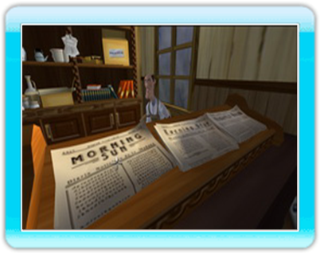

12 |
Livy, Willie, Alvin |
 |
|

Livy Washington, la servante.
Willie, le fourbe. Capable de vous obtenir pratiquement n'importe quoi... tant que c'est falsifié ou illégal, bien entendu. Ce cher Willie peut se révéler d’une aide précieuse si vous avez de quoi payer ses services.
Profession : fermier. C'est le seul fermier (avec Joe Banister) à avoir réussi à conserver sa ferme. Et ce vieil Alvin est bien décidé à se battre jusqu'au bout contre l'infâme Starek. |
 Alvin Jones, le vieux.
Alvin Jones, le vieux. |
 |
 |